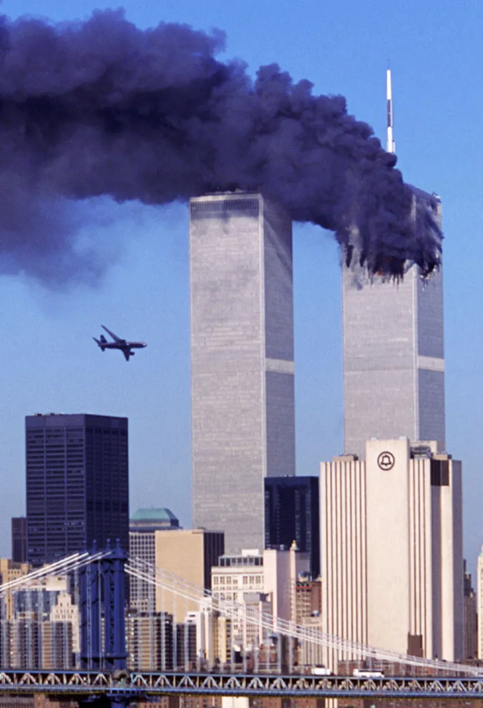
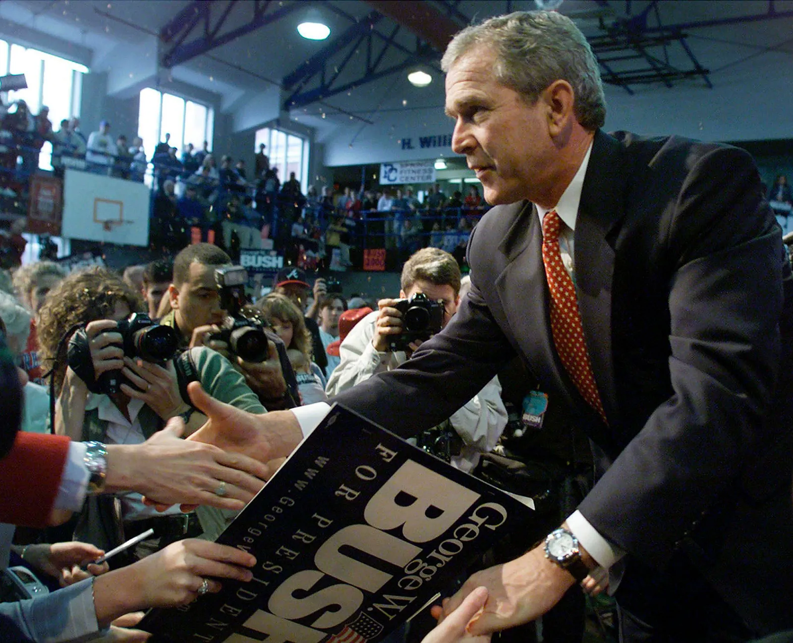
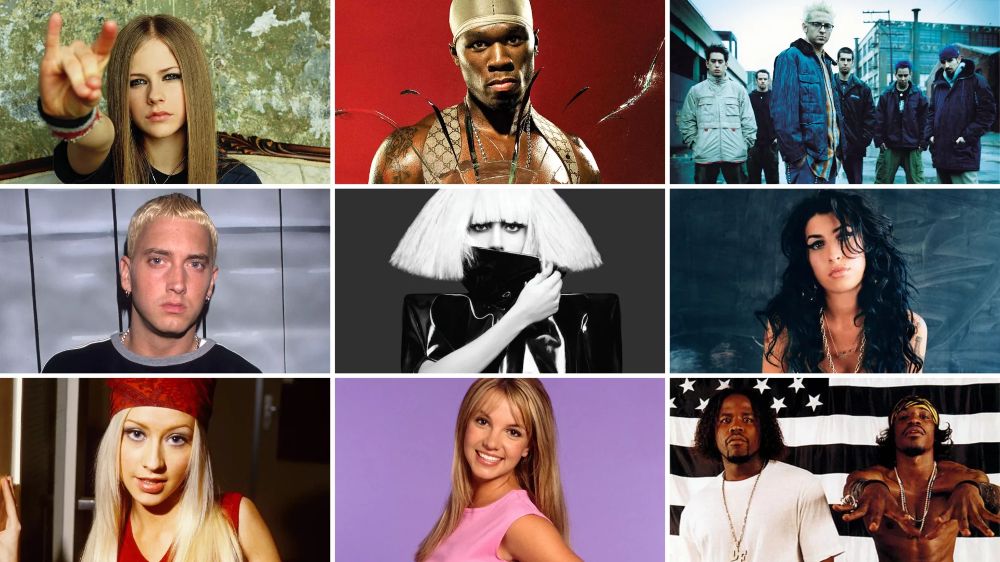
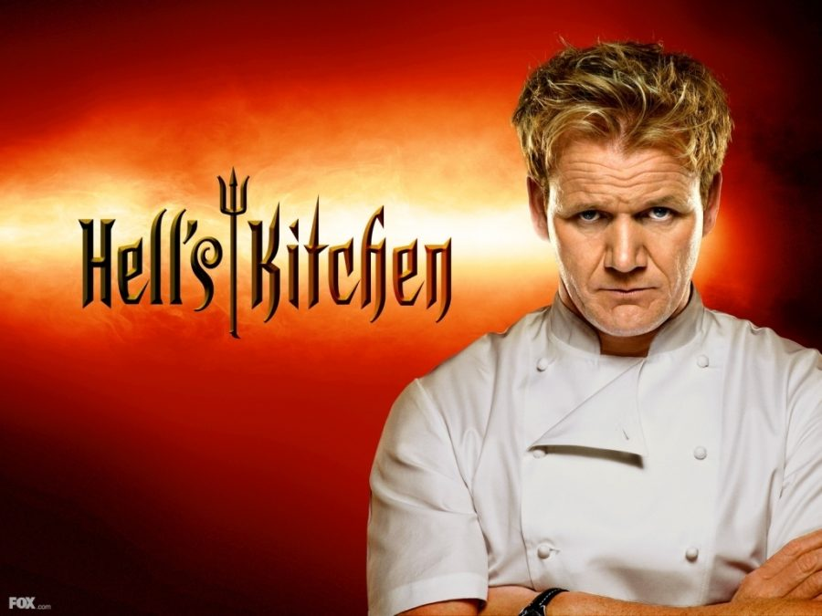
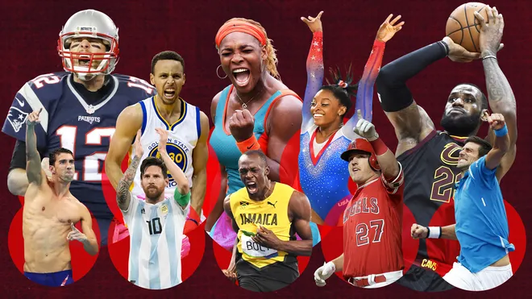
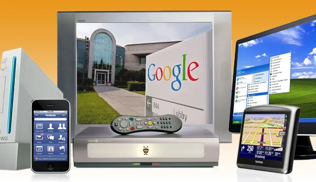

- September 11, 2001: Terrorist attacks on the World Trade Center changed global security and politics forever.
- The War on Terror began, leading to wars in Afghanistan and Iraq.
- Natural disasters like Hurricane Katrina (2005) devastated communities and exposed infrastructure weaknesses.
- The 2008 global financial crisis triggered widespread economic recession and job losses.
- Social media began emerging, changing how people communicated and shared news.
Welcome to the 2000s
This webpage was created by Ross O'Neil
History

Politics
- The decade began with the controversial 2000 U.S. presidential election between George W. Bush and Al Gore.
- George W. Bush served two terms, shaped by the 9/11 attacks and the Iraq War.
- Concerns over terrorism and homeland security dominated global politics.
- Climate change became a growing issue, prompting international debates and awareness.
- In 2008, Barack Obama made history as the first African-American president elected in the United States.

Music
- Pop stars like Britney Spears, Beyoncé, Rihanna, and Justin Timberlake dominated charts.
- Hip-hop and rap exploded in popularity with artists like Eminem, Kanye West, and 50 Cent.
- Alternative and emo rock rose with bands like Linkin Park, Green Day, and Fall Out Boy.
- Music TV shows like "American Idol" launched careers of major artists.
- The iPod and iTunes changed how people listened to and purchased music.

Fashion
- Low-rise jeans, cargo pants, and denim everything were signature 2000s styles.
- Logos were loud—Juicy Couture tracksuits, Ed Hardy tees, and Von Dutch trucker hats were everywhere.
- The McBling era brought lots of glitter, rhinestones, and bright pink fashion statements.
- Layered tank tops, popped collars, and chunky highlights defined the decade’s casual wear.
- Fashion was heavily influenced by pop culture icons like Paris Hilton and early 2000s TV shows.

Food
- Snack culture thrived—think Bagel Bites, Dunkaroos, and Lunchables.
- Energy drinks like Red Bull and Monster became wildly popular among teens and young adults.
- Fast food chains innovated with menu items like the McGriddle and KFC Famous Bowl.
- Microwaveable meals and frozen dinners remained staples of convenience culture.
- Reality cooking shows like “Hells Kitchen” and “Iron Chef” became prime-time hits.

Sports
- Michael Phelps broke Olympic records and became a household name in swimming.
- Roger Federer and Serena Williams dominated tennis with multiple Grand Slam titles.
- Tom Brady led the New England Patriots to multiple Super Bowl wins.
- 2006 FIFA World Cup was iconic, especially Zidane’s headbutt in the final match.
- Basketball legends like Kobe Bryant and LeBron James became global sports icons.

Technology
- The iPod revolutionized music in 2001, letting users carry thousands of songs in their pocket.
- Facebook (2004) and YouTube (2005) changed how we socialize and consume media online.
- The iPhone launched in 2007, kickstarting the smartphone era.
- Windows XP was released in 2001 and became one of the most loved operating systems.
- Flip phones like the Motorola Razr were trendy status symbols before touchscreen phones took over.
